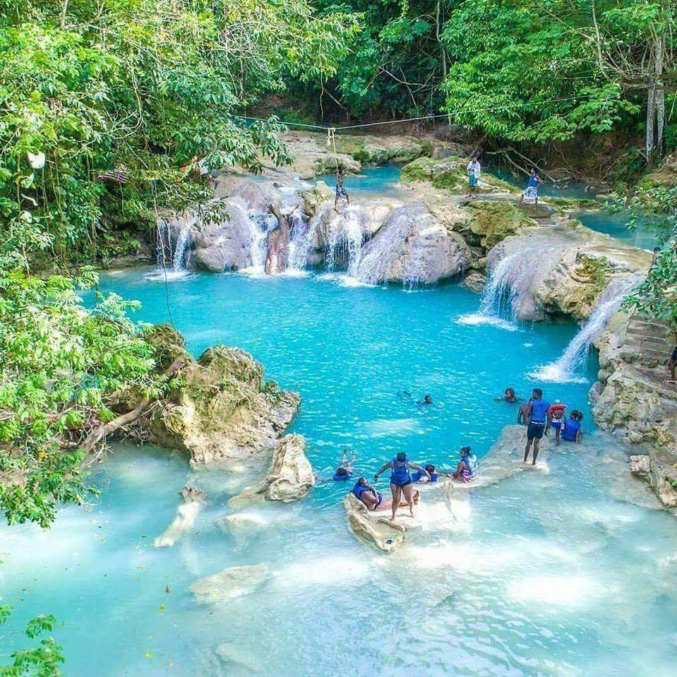

Blue Hole, Secret Falls
- Blue Hole, Secret Falls
- Blue Hole is one of those breathtaking water attractions in Jamaica that’s a favourite for both locals and visitors to the island.
It’s a crowd-pleaser that has not been privatized, meaning it’s free to access and you’ll only be paying for your guide which you will discover is well worth the few bucks.
It’s close enough to Ocho Rios and awe-inspiring enough for you to make this trip a priority when visiting Jamaica. - Why the name?
- Blue Hole is aptly named because of the unbelievably bright and beautiful turquoise water of the White River nestled high in the hills of St. Mary.
The river offers several sizes of natural swimming pools, plus a few caves to explore and a few waterfalls for climbing, rope swinging, and leaping.
- What should I bring?
- Bring a sense of adventure and time to relax! Most guests also pack comfortable walking shoes and plan to dress for changing weather with layers of clothing.
Blue Hole Packages
A variety of luxury attraction and activity packages are available. Choose a package below and contact us to begin your reservation. We're happy to help you experience tropical bliss